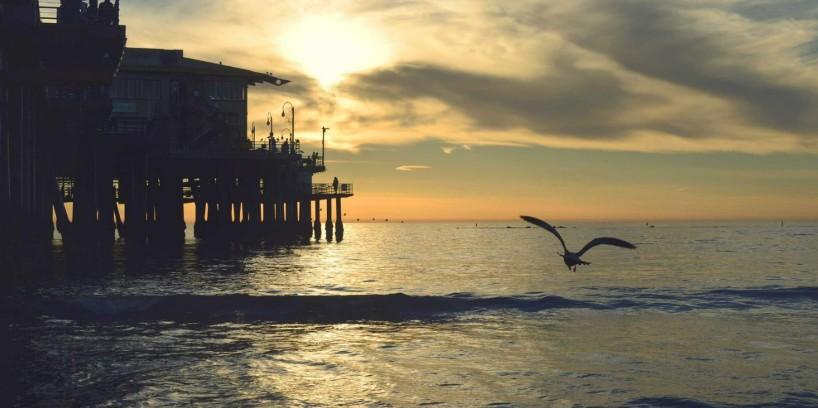

Romantic Fiction Short Story ~1,000 Words
Insect of Longing

It's a breezy rainy evening. Cold foamy glass, the beer inside, my palm grabbing it tight. The vodka in hers is the same. Ice cubes floating on the surface of her drink — rough texture, white in colour, foamy, and clean. We sit on her queen-sized bed, stealing glances at each other, since it is after a long time that we sit together in one room. Her recently serviced air conditioner makes a dumb noise, and her fan is at speed 3 trying its best to ascertain its worth in the humid Delhi heat. Her eyes wander around, trying to locate something of importance, she doesn't know what. I take a small sip from my beer and reach out to the opened packet of chips resting on her lap. She shifts a little to allow me easy access. I smile at her. She doesn't, as if every gesture of her was a reminder of her un-love towards me.
With her glass still in her hands, she lays flat on her back, resting her head on the pillow. The pillow squeezes and the shape of her head, for her head is huge. She shuts her eyes, but deep down there are things she wanted to say out loud. She opens her eyes and steals another glance at me. I am wondering what exactly it is that she wants to say.
"You have grown thin," she breaks the ice and I cringe at the statement.
"Why are you talking like my mother," I reply with my trademark smirk adorning my bearded face.
She often beats herself up about her struggles to find the right words in apt situations. She says the most random things.
"I can feel my words trapped in my mind, refusing to come out of my mouth," she says.
"It's fine. I am fine without talking. Let us be silent for a moment."
"Okay."
After a brief pause.
"Thanks," she says as if I have done her a favour. In truth, I am doing myself a favour since I am short of words too.
She takes a long sip from her glass, emptying it. She shakes it to check if there's any of it left. Nothing.
I follow suit and drink my glass empty.
We discover that we have run out of alcohol. I didn't realize it was the last of the three beers I just gobbled down. I feel a bit wobbly. She jumps out of her bed.
"I am going to pee," she says.
I sit silently in the room, listening to the slow music of raindrops hitting the road outside in rapid succession. The air conditioner in her room struggles to be louder than the fan. There's a constant battle going on between the two, just like us. Me and her.
In love, you can't reason. It is just there. Right there. Sitting on your bed, inches away, and yet, it seems too out of reach. The distance of those inches seems like years. Time-space continuum acts up, and the desire to reverse the time overtakes my headspace as the beer hits my brain in the pleasure parts. She returns from the washroom, her face wet. She has just cried it seems. For no reason whatsoever, or so I think.
I take a good look at her body for the first time in months. She is still the same. Fleshy, pretty, with a great body and posture, beautiful lips with red shades of leftover lipstick. Tiny strands of hair on her beautiful skin shine, like every other part of her body. Her lustrous and smooth thighs make a perfect curve. The muscles there are tight from all the dancing she has been doing, as she tells me. The gorgeous curves of her ample breasts heave a little with every shallow breath she takes. Before sitting down again on her bed, she stretches her neck a little. I rejoice at this simple gesture, admiring the pinnacle of the beauty of the female form. She smiles at me once again.
As she sits down, her shorts fold up a little, exposing a little more of her skin. Her hairless thighs resemble a clean marble slippery floor, buttery smooth and sparkling like a clear water body in the sunlight. Her arms move slowly as she adjusts herself on her bed.
"What are you staring at?" she asks me putting her head at rest again.
"You are beautiful," I tell her the truth after a long time. She wouldn't believe me.
"Okay, shut up you asshole. We are out of vodka, you have any beer left?"
"No."
"Shall we go and get more?"
"Yes. Those kebabs too."
"Yes."
"Let's go."
We walk out in the rain. But my car's parked outside her flat, so no problem.
"I love driving in the rain," I tell her.
"Who doesn't," she replies.
At that moment, I see a small ten legged insect crawling on the insides of my car's windshield.
An Insect of Longing, I christen it as we drive to the wine shop and get ourselves more alcohol. Beer for me, vodka for her. We then go to the nearby stall to get the kebabs packed.
On our way back, the rain intensifies. I stop my car at the side of the road. She doesn't utter a word. The car is brimming with our alcoholic breaths. I can feel vodka mixing with beer and I look at her. She is already looking at me.
"What are you thinking," I ask her in my head.
"I am not thinking anything. What are you thinking?"
"I think you are the most beautiful person that I know."
"Hyperbole."
"No."
I look straight at my windshield. The rain gets heavier, and so have our breaths. We both are trapped in the rain, blocked from the view of the world. I feel the intense urge to kiss her wet lips. I think she feels the same.
In my mind, I bend towards her, she bends toward me and our shaking lips meet each other. I am afraid to move my lips, so is she. We keep our lips resting on each other's lips for a few moments before we get them moving. I grab her lower lip lightly between my lips and suck harder on it. My hands are uncomfortable so I rest them on her waist. She holds my mouth in her hands, softly touching my beard. I slightly open my eyes to look into her eyes. They are shut. Clouds roar and we keep kissing each other. Moment by moment, the kissing turns intense as we explore each other's mouths through our tongues. Our stinking breaths offer no hindrance to us as our senses are now blocked by desire. She bends a little forward to kiss my neck. I get instant goosebumps. Her lips again find their way to my lips and we engage in deep passionate lovemaking. Blame it on the alcohol in our systems, but I didn't want that moment to end. But it had to end. The dream ends.
I look at her. She is staring outside. The rain has slowed down.
"Should we move?" she asks me looking straight.
I nod and start my car and we slowly start moving forwards.
"It was beautiful," she tells me.
"What?" I ask.
"Whatever you were thinking."
"How do you know it?"
"I feel the taste of beer and cigarettes in my mouth."
My heart races as we silently trace our way through the slow rain. The Insect of Longing isn't seen anywhere. I look carefully for it.